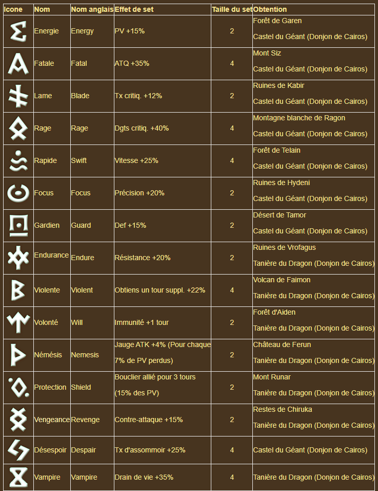

Qu'est ce qu'une Rune ?
Une rune est une pierre devant être gravée sur un monstre et augmentant ses statistiques. Elle possède une qualité, un nombre d'étoile, une statistique principale, parfois une seconde, des statistiques secondaires et enfin un niveau d'amélioration. Elles s'obtiennent en récompense des cartes du scénario, dans des donjons comme le Castel du Géant et la Tanière du Dragon ou encore dans l’Échoppe de Magie. L'inventaire ne peut contenir que 900 runes, les suivantes seront détruites.
Comment se présente une rune ?
Lorsque vous obtenez une rune, la qualité indique le nombre de statistiques secondaires qu'elle possède. Cette qualité sera améliorée selon le niveau d'amélioration de la rune. Les qualités sont, de la moins bonne à la meilleure : Normal, Magique, Rare, Héroïque et enfin Légendaire.
Le nombre d'étoile d'une rune représente son rang, celui ci va de 1 à 6, 6 étant le plus haut rang. Plus le nombre d'étoile d'une rune est haut, meilleures seront ses statistiques.
La statistique principale est simplement la statistique primaire de la rune, c'est elle qui aura la plus grande valeur et donc influence, pour cette rune c'est une statistique PV+. Il est également possible qu'une rune possède une seconde statistique principale, dans ce cas le nom de la rune changera pour refléter cette statistique. Ainsi cette rune gagne le préfixe Mortel grâce à sa seconde statistique principale en Taux de critique. Cette seconde statistique principale ne peut pas être améliorée et ne peut pas être la même que la statistique principale ou les statistiques secondaires.
Les statistiques secondaires sont des statistiques supplémentaires. Il est à noter qu'une rune ne peut pas avoir deux fois la même statistique, peu importe qu'elle soit principale ou secondaire. Cette rune possède trois statistiques secondaires : PV%, Dgts critiq% et ATQ%.
Enfin une rune possède un niveau d'amélioration allant de 0 à +15. Toutes les runes commencent à 0 et gagnent en statistiques à chaque amélioration. Les détails concernant l'amélioration de runes seront traités plus loin dans ce guide.
Il est important de noter que les bonus offerts par les runes ne s'appliquent qu'aux statistiques de base du monstre, les bonus sont donc additifs et non multiplicatifs.
Graver une rune ?
Graver une rune sur un monstre est gratuit. Attention cependant, si un monstre possède déjà une rune dans l'emplacement souhaité, la rune précédente sera détruite et irrécupérable. Malheureusement il n'existe aucun moyen de verrouiller une rune, il faut donc être prudent et s'assurer que le monstre ne possède pas de rune dans l'emplacement, retirer la rune précédente ou s'assurer qu'elle n'est pas importante et peut être détruite sans regret.
Le principe
Toutes les runes sont obtenues au niveau d'amélioration 0, et il est possible de les améliorer jusqu'au niveau +15. Chaque niveau d'amélioration va augmenter la statistique principale de la rune, et aux niveaux 3, 6, 9 et 12 une statistique secondaire sera également améliorée. Le prix de l'amélioration varie selon le niveau d'amélioration actuel de la rune, et son nombre d'étoiles, tandis que les chances d'échec augmentent selon le niveau d'amélioration. C'est pour cela que monter une rune à +15 peut être un vrai gouffre à mana. A noter également qu'il est impossible d'échouer une amélioration jusqu'au niveau +3.
Les sets de rune
Si on ne parle que maintenant des sets de rune, c'est pour une bonne raison : toutes les runes fonctionnent de la même manière, peu importe le set auquel appartient celle ci. Une rune d'un set pourra avoir les mêmes statistiques qu'une rune de n'importe quel autre set.
Le set n'est qu'un bonus actif lorsqu'un certain nombre de runes d'un même set sont équipées sur un monstre. Il existe des sets de 2 et 4 runes, il est donc possible d'avoir un set de 4 runes et un set de 2 runes, ou trois sets de 2 runes. L'effet des sets se cumulent, donc trois sets Energies donneront au monstre PV +45%. Les runes d'un même set n'ont pas besoin d'être dans des emplacements se suivant, un set de 2 runes peut s'activer avec une rune dans les emplacements 2 et 5 par exemple.
